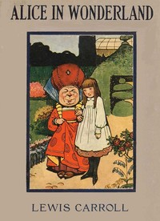
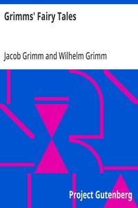
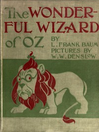

Kids Learning Books
Children learn to read once — and the books they read during that critical window shape not just their literacy but their relationship with reading for life. Parents and educators who make excellent books available to young readers during the primary years give children a gift whose value compounds across decades. The kids' learning library on LifeWithBooks has been assembled with this responsibility in mind: every title has been selected for quality, age-appropriateness, and genuine educational value. Early literacy begins with phonics — the understanding that written letters correspond to spoken sounds. Before a child can read words, they must understand that sounds have visual representations, and that blending sounds together produces words. Our collection of alphabet books, phonics activity packs, and initial sounds materials supports this foundational stage, giving parents the tools to supplement classroom phonics instruction with targeted home practice. Once decoding is established, reading instruction shifts to fluency and comprehension. Graded readers — books structured around controlled vocabulary and gradually increasing sentence complexity — build these skills systematically. Our Fairyland, My English Book, and Easy English with Games series provide this scaffolding in an engaging format, with illustrations that support meaning and activities that test understanding. Children at this stage benefit enormously from daily read-aloud sessions, even after they can technically read independently, because hearing fluent reading models the rhythm and expressiveness that children are still developing in their own reading voices. For older primary students, the grammar and writing books in this collection build the analytical skills that academic success requires. Understanding parts of speech, sentence construction, and punctuation is not merely a school skill — it is the foundation for clear communication in every context a child will encounter as an adult. Our approach to grammar emphasises understanding over rote rule-memorisation: children who understand why a comma belongs in a sentence will never forget it. Every book in this category is available as a free PDF download. Print the activity pages, work through them with your child, then come back for more. Building a reading habit during childhood is the single most powerful educational gift any parent or teacher can give.
Featured Reading Guides
Reading Guide
Reading with young children is most effective when it is consistent, unhurried, and joyful — never a chore. Set a regular read-aloud time, ideally the same time every day, so that reading becomes part of the family rhythm rather than something that happens when there happens to be a spare moment. Bedtime is popular for good reason: the calming transition from activity to rest combines naturally with story. For pre-readers and early readers, point to words as you read them aloud. This teaches the crucial concept that print moves from left to right, that words correspond to spoken words, and that the shapes on the page carry meaning. Do not rush this — a child who watches an adult's finger tracking words is absorbing the mechanics of reading without any formal instruction. When a child is reading independently, resist the urge to correct every error immediately. Let them attempt an unfamiliar word, praise the attempt, and gently provide the correct pronunciation. Error is essential to learning, and children who are frequently corrected become anxious readers who focus more on avoiding mistakes than on meaning. Save corrections for patterns — if the same word is misread consistently, address it. For the grammar and writing books in this collection, short daily practice (fifteen minutes) outperforms occasional long sessions. Use the exercises as conversation starters rather than tests: 'Why do you think that sentence needs a comma here?' invites thinking, while 'That's wrong, add a comma' closes it down. Children who understand the reasoning behind grammatical rules become writers; children who memorise rules without understanding become rule-followers who panic when a new situation arises.

Alice's Adventures in Wonderland
Lewis Carroll's whimsical journey down the rabbit hole into a world of nonsense and wonder.
Read More
Grimms' Fairy Tales
The original collection of timeless fairy tales gathered by the Brothers Grimm.
Read More
The Adventures of Tom Sawyer
Mark Twain's timeless tale of boyhood mischief, treasure and adventure along the Mississippi.
Read More
The Jungle Book
Kipling's stories of Mowgli the man-cub raised by wolves in the Indian jungle.
Read More
The Wonderful Wizard of Oz
Dorothy and her friends follow the yellow brick road in Baum's beloved American fairy tale.
Read More
Treasure Island
Robert Louis Stevenson's timeless pirate adventure with Jim Hawkins, Long John Silver and a hunt for
Read More